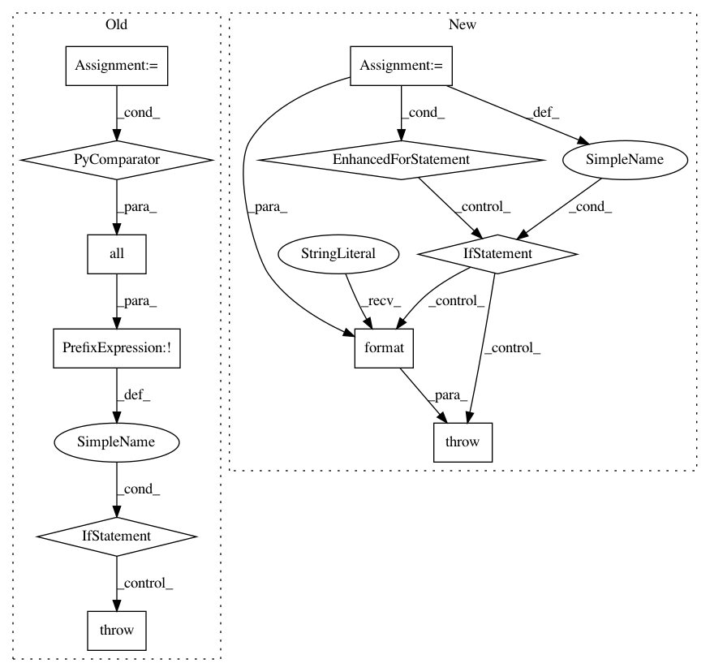

dbfe2afe79ac497075e50a3e569a1d63a346fb4d,pyemma/_base/serialization/serialization.py,SerializableMixIn,_validate_interpolation_map,#SerializableMixIn#,142
Before Change
// check for valid operations: add, rm, mv
valid_ops = ("set", "rm", "mv")
if not all(action[0] in valid_ops for actions in inter_map.itervalues() for action in actions):
raise DeveloperError("Your _serialize_interpolation_map contains invalid operations. "
"Valid ops are: {}".format(valid_ops))
self._serialize_interpolation_map = inter_map
def __interpolate(self, state):
// Lookup attributes in interpolation map according to version number of the class.
After Change
// check for valid operations: add, rm, mv, map
valid_ops = ("set", "rm", "mv", "map")
for k, v in inter_map.items():
if not is_int(k):
raise DeveloperError("all keys of _serialize_interpolation_map "
"have to be of type int (class version numbers)")
if not isinstance(v, (list, tuple)):
raise DeveloperError("actions per version have to be list or tuple")
for action in v:
if action[0] not in valid_ops:
raise DeveloperError("Your _serialize_interpolation_map contains invalid operations. "
"Valid ops are: {valid_ops}. You provided {provided}"
.format(valid_ops=valid_ops, provided=action[0]))
self._serialize_interpolation_map = inter_map
def __interpolate(self, state):
// Lookup attributes in interpolation map according to version number of the class.
In pattern: SUPERPATTERN
Frequency: 3
Non-data size: 11
Instances
Project Name: markovmodel/PyEMMA
Commit Name: dbfe2afe79ac497075e50a3e569a1d63a346fb4d
Time: 2017-04-06
Author: m.scherer@fu-berlin.de
File Name: pyemma/_base/serialization/serialization.py
Class Name: SerializableMixIn
Method Name: _validate_interpolation_map
Project Name: deepgram/kur
Commit Name: 1f1adbf4aa47514d0ce857398fa0d1cb2956e267
Time: 2017-01-03
Author: ajsyp@syptech.net
File Name: kur/providers/shuffle_provider.py
Class Name: ShuffleProvider
Method Name: __init__
Project Name: pgmpy/pgmpy
Commit Name: 654cb3ebcd25491bff876971adcea2d2305207f4
Time: 2016-07-01
Author: yashuseth2503@gmail.com
File Name: pgmpy/factors/continuous/ContinuousFactor.py
Class Name: ContinuousFactor
Method Name: reduce